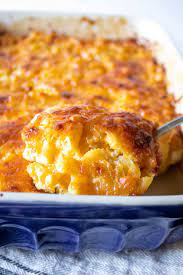

Home
Hamburger recipe
Citrus Roasted Salmon recipe
The best recipe for mac & cheese

Here is a list of all the ingredients you are going to need
- ½ (16-oz.) package cellentani pasta
- 2 tablespoons butter
- 1 medium onion, diced
- 1 green bell pepper, diced
- 1 (10-oz.) can diced tomatoes and green chiles
- 1 (8-oz.) package pasteurized prepared cheese product, cubed
- 3 cups chopped cooked chicken
- 1 (10 3/4-oz.) can cream of chicken soup
- ½ cup sour cream
- 1 teaspoon chili powder
- ½ teaspoon ground cumin
- 1 ½ cups (6 oz.) shredded Cheddar cheese
Now to the direction
-
Preheat oven to 350°. Prepare pasta according to package directions.
-
Meanwhile, melt butter in a large Dutch oven over medium-high heat. Add
onion and bell pepper, and sauté 5 minutes or until tender. Stir in
tomatoes and green chiles and prepared cheese product; cook, stirring
constantly, 2 minutes or until cheese melts. Stir in chicken, next 4
ingredients, and hot cooked pasta until blended. Spoon mixture into a
lightly greased 10-inch cast-iron skillet or 11- x 7-inch baking dish;
sprinkle with shredded Cheddar cheese.
- Bake at 350° for 25 to 30 minutes or until bubbly.
Where the recipe came from
This recipe came from myrecipe.com and all credit goes to Southern Living.
Below is a link taking you to the website I got the recipe from
My recipe website